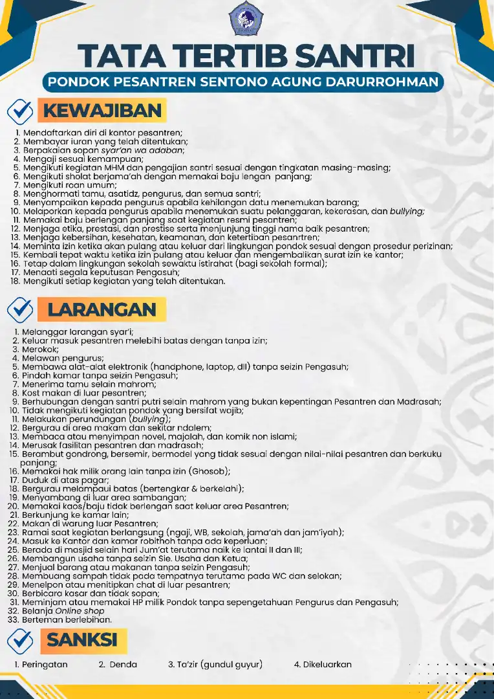
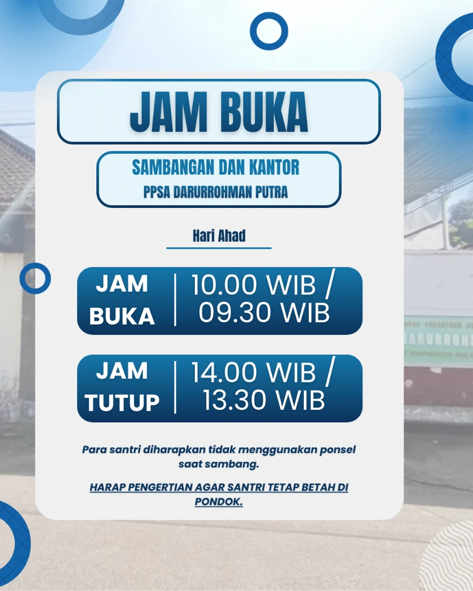
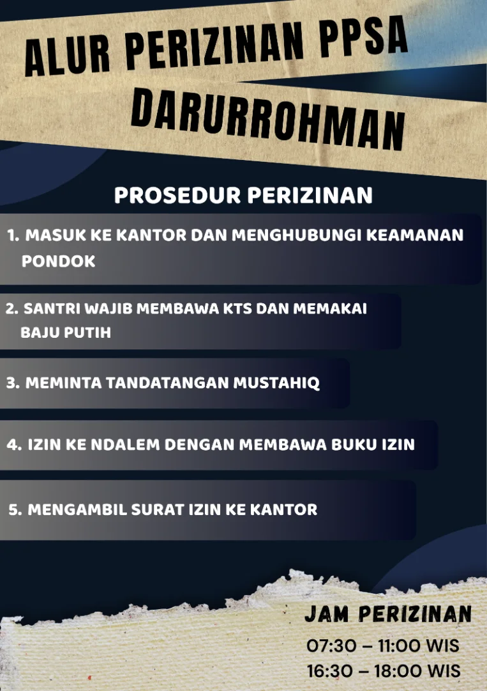
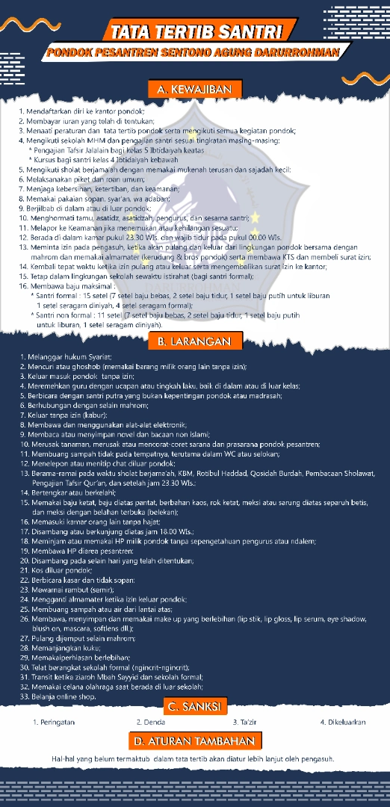
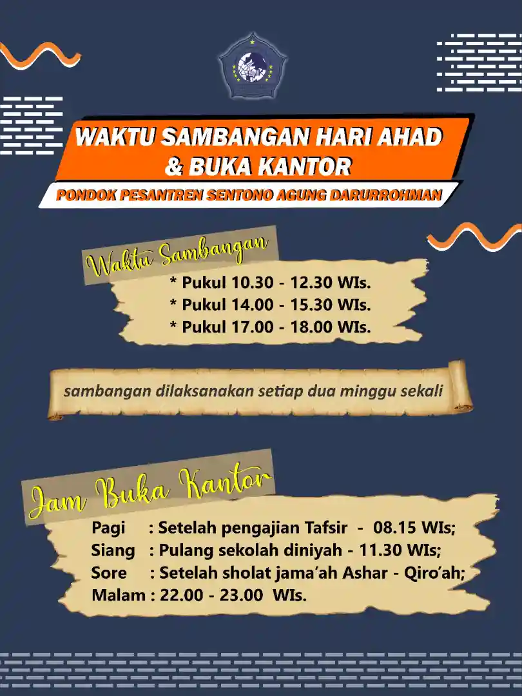
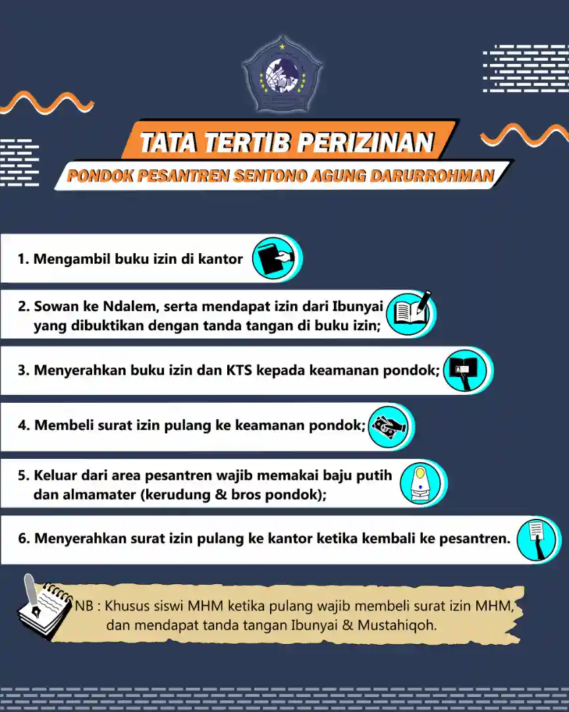
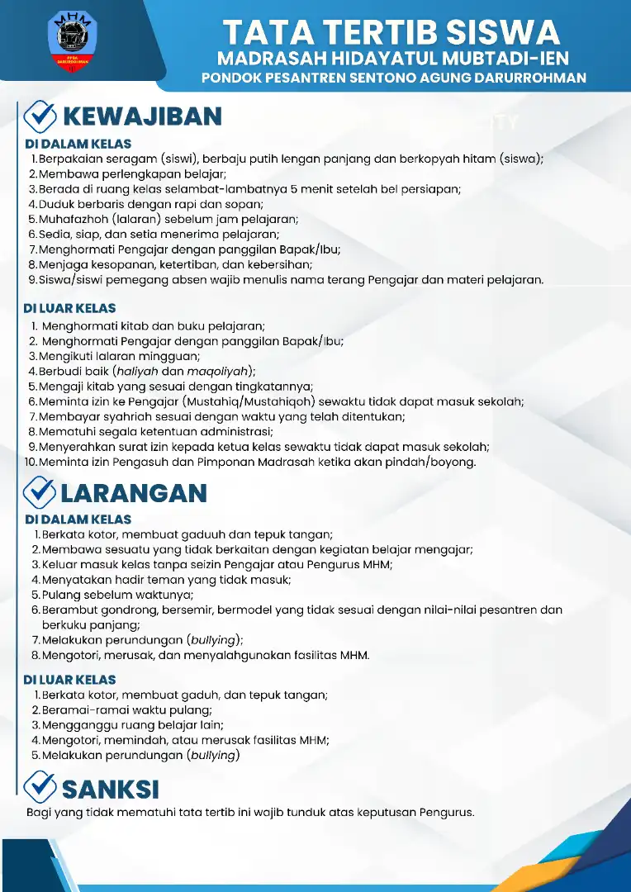

{kind=link}
{kind=link}
{kind=link}
{kind=link}
{kind=link}
{kind=link}
{kind=link}
Lokasi
Jalan Pesantren Rt 12 Rw 01
Urek urek, Gondanglegi, Malang
Lembaga Pendidikan Salaf
Pondok Pesantren Sentono Agung Darurrohman Urek urek Gondanglegi Malang
Pondok Pesantren Sentono Agung Darurrohman
PPSA. Darurrohman merupakan suatu Lembaga Pendidikan Salaf yang tumbuh serta diakui oleh masyarakat, dengan sistem di mana para santri menerima melalui pengajian kitab-kitab salaf berhaluan Ahlussunnah Wal Jamaah An-Nahdliyah dan Madrasah Diniyah, hal ini sesuai dengan visi misi pondok pesantren yakni untuk mencetak generasi berakhlakul karimah dan berilmu.
PPSA. Darurrohman berdiri pada tahun 1993 dengan kondisi bangunan yang seadanya dan sistem pendidikan yang sangat sederhana, namun lambat laun Pesantren mulai mengalami perkembangan baik dari segi sarana. prasarana maupun sistem pendidikannya.
PPSA. Darurohman hingga saat ini memiliki kegiatan yang cukup padat diantaranya kegiatan menghafal AI-Qur'an, Madrasah Diniyah, Jam'iyyah dan Ekstrakurikuler dan setiap tahunnya mencetak para hafizh-hafizhah serta lulusan Madrasah Hidayatul Mubtadi-ien.
Madrasah Diniyah
Lembaga Tahfidzil Qur'an
Madrasah Hidayatul Mubtadi-ien menyelenggarakan pendidikan berjenjang dengan kurikulum berbasis kitab kuning dan pembelajaran Ahlussunnah wal Jama'ah An-Nahdliyah.
Pondok Pesantren Sentono Agung Darurrohman Urek urek Gondanglegi Malang
📝 Syarat Pendaftaran
Syarat pendaftaran sebagai berikut
Syarat yang harus terpenuhi sebelum melaksanakan pendaftaran:
Pendaftaran di buka mulai awal Juni 2026
* Untuk Putri
** Dianjurkan
💰 Pembayaran
Rincian pembayaran sebagai berikut
| Jenis | Putra | Putri | Keterangan |
|---|---|---|---|
| Pendaftaran santri baru | 200.000 | 200.000 | Selamanya |
| Pendaftaran siswa MHM | 50.000 | 50.000 | Selamanya |
| Pendaftaran santri Tahfizh | 15.000 | 15.000 | Per-tahun |
| Kartu Tanda Santri | 15.000 | 15.000 | Selama mondok |
| Syariyah Pondok | 40.000 | 40.000 | Per-bulan |
| Spp Madrasah | 30.000 | 30.000 | Per-bulan |
| Syahriyah Tahfizh | 60.000 | 60.000 | Per-6 bulan |
| Kos makan 2 kali | 250.000 | 250.000 | Per-bulan |
| Bank sampah | 5.000 | 7.000 | Per-bulan |
| Listrik | 7.000 | 5.000 | Per-bulan |
| Ekstrakurikuler | 5.000 | 5.000 | Per-bulan |
| Lomba Akhirussanah | 3.000 | 3.000 | Per-bulan |
| Almari | 300.000 | 300.000 | - |
| Wadah kos | 10.000 | 10.000 | - |
| Seragam diniyah | - | 190.000 | - |
| Almamater & Bros | - | 75.000 | - |
| Al Qur'an | 75.000 | - | - |
| Majmu' | 15.000 | 15.000 | - |
| Buku persiapan membaca Al Qur'an | 17.000 | 17.000 | - |
| Buku izin | 10.000 | 10.000 | - |
| Buku setoran | - | 10.000 | - |
| Raport & photo | 20.000 | 20.000 | - |
| Shodaqoh Jariyah | 500.000 | 500.000 | Selama mondok |
| Buku tamrin | 12.000 | 12.000 | - |
| Total tanpa tahfidz | 1.564.000 | 1.764.000 | |
| Total keseluruhan | 1.639.000 | 1.839.000 |
* Infaq pondok bisa dicicil dengan awal pembayaran Rp. 250.000
| Jenis | Putra | Putri | Keterangan |
|---|---|---|---|
| Syahriyah Pondok | 40.000 | 40.000 | Per-bulan |
| SPP Madrasah | 30.000 | 30.000 | Per-bulan |
| Syahriyah Tahfizh | 60.000 | 60.000 | Per-6 bulan |
| Kos makan | 250.000 | 250.000 | Per-bulan |
| Listrik | 5.000 | 5.000 | Per-bulan |
| Bank sampah | 7.000 | 7.000 | Per-bulan |
| Ekstrakurikuler | 5.000 | 5.000 | Per-bulan |
| Lomba akhirussanah | 3.000 | 3.000 | Per-bulan |
| Jumlah (Dengan Tahfizh) | 400.000 | 400.000 | Bulan pertama termasuk kos makan |
| Jumlah (Tanpa Tahfizh) | 340.000 | 340.000 | Per-bulan |
Pondok Pesantren Sentono Agung Darurrohman







Pondok Pesantren Sentono Agung Darurrohman Urek urek Gondanglegi Malang